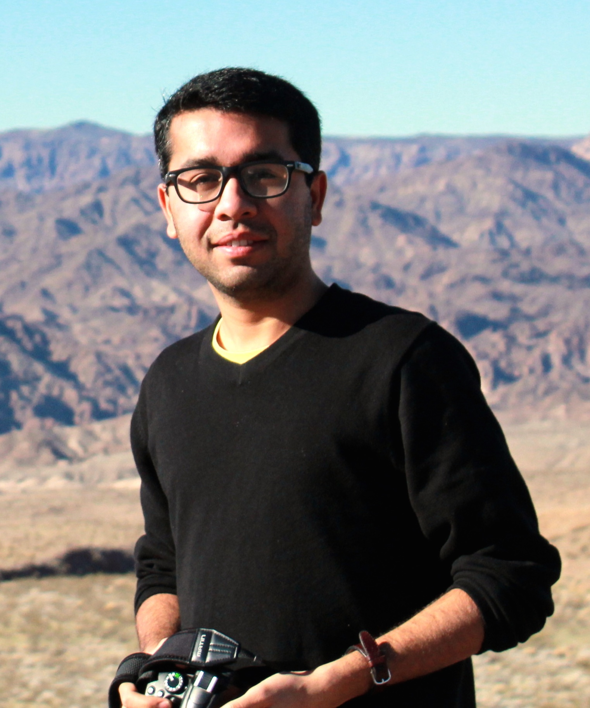

|  | (Google Scholar Profile) |
I am a PhD student in the Department of Computer Science at Boston University. I joined CS@BU in Fall’13.
I was visiting Create-Net in Italy for Spring 2016. At Create-Net, I was working on network traffic optimization and NFV placement problem for 5G network.
At BU, I am working with Prof. Ibrahim Matta. One of the main projects that I am working on is
Recursive InterNetwork Architecture (RINA).
RINA is a new network architecture that is based on the fundamental principle that networking is inter-process communication (IPC). It recurses the IPC service over different scopes.
I am also working on Network Function Vitualization (NFV) management using Control Theory.
NFV traffic management and NFV service placement are also my area of interest.
Network Virtualization (Management and Orchestration)
Function Virtualization
Future Internet Architectures (Recursive InterNetwork Architecture (RINA))
Software Defined Networking (SDN)
Content Delivery Networks (CDN)
PhD Student, Computer Science, 2013 - present
Boston University, Boston, USA
Advisor: Ibrahim Matta
Current Position: Research and Teaching Assistant
Research Area: Network Virtualization, Virtual Functions (VF), Cloud Computing, Future Internet Architectures
Master of Science, Computer Science and Engineering, 2011-2013
Koc University, Istanbul. Turkey
Graduated: July 2013
Advisors: Prof. Oznur Ozkasap and Prof. Sinem Coleri Ergen
Thesis: Vehicle Mobility, Communication Channel Modeling and Traffic Density Estimation in VANETs (pdf)
Vehbi Koc Fellowship
Bachelor of Science, Computer Science, 2007-2011
Lahore University of Management Science (LUMS), Lahore, Pakistan
Graduated: June 2011
Advisor: Prof. Fareed Zaffer
Zhongliang Zhao, Eryk Jerzy Schiller, Eirini Kalogeiton, Torsten Braun, Stiller Burkhard, Mevlut Turker Garip, Joshua Joy, Mario Gerla, Nabeel Akhtar, Ibrahim Matta.
“Autonomic Communications in Software-Driven Networks”.
IEEE Journal on Selected Areas in Communications (JSAC), 2017. (pdf)
POSTER: Nabeel Akhtar, Marzieh Babaeianjelodarx, Ibrahim Matta, Yaoqing Liux. “Using a Control Theoretic Load Balancer for Efficient Attack Traffic Analysis and Defense on Virtualized Infrastructure”.
The 2nd Symposium on the COntrol of NEtwork Systems (SCONES 2017) ,
associated with IEEE Transactions on Control of Network Systems (TCNS), Boston, USA, Oct. 2017. (pdf)
DEMO/POSTER: Nabeel Akhtar, Marzieh Babaeianjelodarx, Ibrahim Matta, Yaoqing Liux. “On Balancing Load to Quickly Detect and Stop Attack Traffic”.
IEEE Network Innovators Community Event Workshop (NICE 2017),
co-located with IEEE ICNP 2017, Toronto, Canada, Oct. 2017. (pdf)
Nabeel Akhtar, Ibrahim Matta and Yuefeng Wang. “Managing NFV using SDN and Control Theory”.
IEEE/IFIP International Workshop on Management of the Future Internet (ManFI 2016),
co-located with IEEE NOMS 2016, Istanbul, Turkey, April 2016. (pdf)
Yuefeng Wang, Ibrahim Matta and Nabeel Akhtar. “Application-Driven Network Management with ProtoRINA”.
IEEE/IFIP Network Operations and Management Symposium (NOMS 2016), Istanbul, Turkey, April 2016. (pdf)
DEMO: Nabeel Akhtar, Ibrahim Matta and Yuefeng Wang. “Managing NFV using SDN and Control Theory”.
IEEE/IFIP Network Operations and Management Symposium (NOMS 2016), Istanbul, Turkey, April 2016. (pdf) (tutorial)
TECH.REPORT: Yuefeng Wang, Ibrahim Matta and Nabeel Akhtar “Application-Driven Network Management with ProtoRINA”,
Technical Report BUCS-TR-2015-003, Boston University, 2015. (pdf)
TECH.REPORT: Nabeel Akhtar, Ibrahim Matta and Yuefeng Wang “Managing NFV using SDN and Control Theory”,
Technical Report BUCS-TR-2015-013, Boston University, 2015. (pdf)
POSTER: Nabeel Akhtar, Ibrahim Matta and Yuefeng Wang “Managing NFV using SDN and Control Theory”,
IEEE Network Innovators Community Event Workshop (NICE 2015), co-located with IEEE ICNP 2015, San Francisco, USA, Nov. 2015. (pdf)
Yuefeng Wang, Nabeel Akhtar and Ibrahim Matta “Programming Routing Policies for Video Traffic”,
International Workshop on Computer and Networking Experimental Research using Testbeds (CNERT 2014), co-located with ICNP 2014,
Raleigh, NC, USA. October 2014. (pdf)
TECH.REPORT: Yuefeng Wang, Nabeel Akhtar and Ibrahim Matta “Programming Routing Policies for Video Traffic”,
Technical Report BUCS-TR-2015-005, Boston University, 2014. (pdf)
Yuefeng Wang, Ibrahim Matta and Nabeel Akhtar “Experimenting with Routing Policies Using ProtoRINA
over GENI”, The Third GENI Research and Educational Experiment Workshop (GREE2014), March 19-20, 2014, Atlanta, Georgia. (pdf)
N. Akhtar, S. Coleri Ergen, and O. Ozkasap, “Vehicle Mobility and Communication Channel Models
for Realistic and Efficient Highway VANET Simulation,”
IEEE Transactions on Vehicular Technology, vol. 64, no. 1, pp. 248-262, January 2015 (pdf)
N. Akhtar, O. Ozkasap, and S. Coleri Ergen, “Analysis of VANET topology characteristics via realistic vehicle
mobility and communication channel models,” accepted in the proceedings of IEEE Wireless Communication and Networking Conference (WCNC 2013), Shanghai, China, April 2013 (pdf)
N. Akhtar, S. Coleri Ergen, and O. Ozkasap, “Analysis of Distributed Algorithms
for Density Estimation in VANETs,” accepted in the proceedings of IEEE Vehicular Networking Conference (VNC)
(VNC 2012), Seoul, Korea, Nov. 2012 (pdf)
Nabeel Akhtar, “Vehicle Mobility, Communication Channel Modeling and Traffic Density Estimation in VANETs,”
MSc thesis (pdf)
POSTER: N. Akhtar, O. Ozkasap, and S. Coleri Ergen, “Realistic Mobility and
Channel Modeling in Vehicular ad-hoc Networks,”
Turk Telekom Group R & D University Relation Workshop, Istanbul, Turkey. Dec. 2011
Network Function Placement, Orchestration and Management
Advisers: Prof. Ibrahim Matta
NFV placement and traffic routing problem.
Managing NFV using SDN and control theory – Spring 2015 to present
Advisers: Prof. Ibrahim Matta
Concepts from Control theory and SDN (Software Defined Networking) are used for NFV (Network Function Virtualization) management and deployment.
Recursive InterNetwork Architecture (RINA) – Fall 2013 to present
Advisers: Prof. Ibrahim Matta
RINA is a new network architecture that is based on the fundamental principle that networking is inter-process communication (IPC). It recurses the IPC service over different scopes.
Analysis of realistic Channel Models for VANETs – Fall 2011 to Spring 2013
Advisers: Dr. Sinem Ergen and Dr. Oznur Ozkasap
This project deals with analyzing different channel models and proposing a realistic model for vehicular ad-hoc network (VANET).
Realistic Mobility Modeling for VANETs – Fall 2011 to Spring 2013
Advisers: Dr. Sinem Ergen and Dr. Oznur Ozkasap
In this project, we integrate real-world road topology and real-time data extracted from the Freeway Performance Measurement System (PeMS) database into the microscopic mobility model in order to generate realistic traffic flows along the highway.
Distributed Algorithms for density estimation in VANETs – Summer 2011 to Spring 2013
Advisers: Dr. Sinem Ergen and Dr. Oznur Ozkasap
The project deals with proposing fully distributed and infrastructure-free mechanisms for the density estimation in vehicular ad-hoc networks. This study is inspired by the mechanisms proposed for system size estimation in peer-to-peer networks.
Providing VANET security through group based approach – Fall 2010 to Spring 2011
Advisers: Dr. Fareed Zaffar
The project deals with security aspects in VANETs. We analysed existing frameworks for providing security and proposed a more efficient framework for evaluating security.
Shortest path traffic flow optimization in VANETs – Summer 2011
Advisers: Dr. Fareed Zaffar
The project deals with computing the shortest path for vehicles using heuristic data and active query caching. Road-side units (RSU) were used to assign weights to different paths and A-star algorithm was then used to compute the shortest path using distance-plus-cost heuristic function.
Development and Analysis of P2P Network Size Estimation – Summer 2010
Advisers: Dr. Oznur Ozkasap
In this project, we analysed and implemented distributed algorithm for network size estimation in P2P networks using Planet-Lab as the underlying test bed.
Color-based feature matching to track objects in consecutive video frames – 2010
Advisers: Dr. Sohaib Khan
Best Project Award at International Conference on Machine Vision (ICMV 2010)
In this project, RBG-pixel based matching and SIFT algorithm were used with trajectory to track a frame in a live video feed. Different augmented reality effects were then generated within the frame using a completely automated process.
Research Intern: Akamai Technologies – Summer 2016
Project: Over-Representation Analyzer for Anomaly Detection.
Description: Developing a tool which will help Akamai Media Performance team to identify problems (anomalies) in Akamai media delivery network.
Cambridge, USA
Graduate Researcher: Create-Net, Italy – Spring 2016
Project: NFV traffic management and service placement for 5G network
Description: Virtual Network Function management and deployment for 4G and 5G networks in Europe.
Trento, Italy
Research Intern: Akamai Technologies – Summer 2015
Project: Feature Selection, Anomaly Detection and Change Detection in Media Delivery.
Cambridge, USA
Research Assistant - Boston University – Spring 2014 to Spring 2015
Project: Experimenting with Programmable Management Policies over GENI
Department of Computer Science,
Boston University, Boston, USA
Research Assistant - Koc University – Fall 2011 to Spring 2013
Wireless Network Laboratory, Department of Computer Engineering,
Chanel Modeling, Realistic Mobility Modeling and distributed algorithms for density estimation in vehicular ad-hoc networks
Koc University, Istanbul, Turkey
Summer Research Assistant, Koc University – Summer 2010
Project: Distributed Protocol for Frequent Item Set Discovery and network size estimation for P2P network
Koc University Summer Research Program, Istanbul, Turkey
IT Consultant: Sidat Hayder – Summer 2009
IT Department
Worked on the second biggest database system in Pakistan, ‘‘Land Record Management Information System’’ (LRMIS)
Worked as software quality assurance consultant
Boston University Sep. 2013 - present
Department of Computer Science
CS 100 Introduction to Computing - Fall 2013
CS 105 Introduction to Databases and Data Mining - Fall 2015
CS 455/655 Computer Networks - Fall 2016
Koc University Aug. 2011 - July 2013
Department of Computer Science and Engineering
ENG 200 Probability for Engineers - Spring 2013
COMP 416 Computer Networks - Fall 2012
COMP 202 Data Structures and Algorithm - Spring 2012
COMP 132 Advanced Programming - Fall 2011
Lahore University of Management Science Aug. 2010- Jun. 2011
Department of Computer Science
CS 212 Computational Problem Solving - Spring 2011
CS 371/ CMPE 371 Computer Networks - Fall ’2010’
{kind=link}